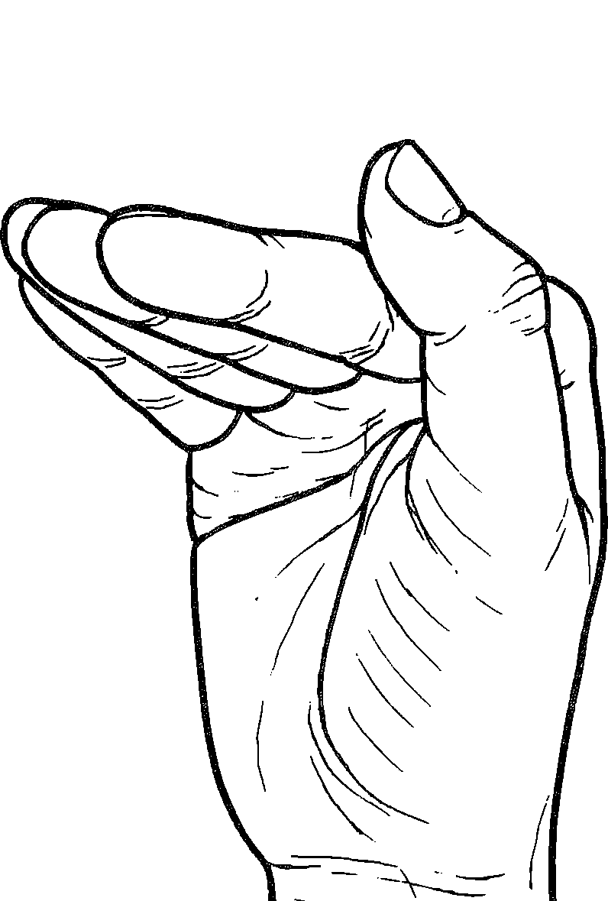
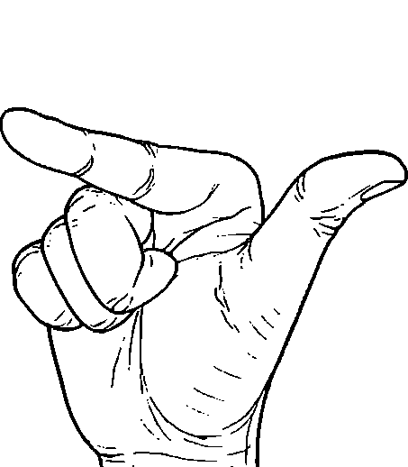
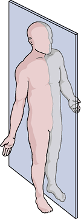

Notera: Nedanstående text är i beta. Partier är
under aktiv omarbetning är markerade med gult. Kommentarer och
förslag mottages gärna
av zrajm@zrajm.org.
En guide till transkription av teckenspråk
Denna artikel har två syften: (a) att erbjuda en lättillgänglig
introduktion till svensk teckenspråkstranskription och (b) fungera som ett
detaljerat referensverk för både nutida och historisk användning. Texten är
inledningsvis kollapsad för att ge överblick. Klicka på en rubrik för att
expandera den, använd expansionsikonen högst upp till höger på sidan för
att expandera alla rubriker samtidigt.
Förord
Transkriptionssystemet kan ses som en slags teckenspråklig
motsvarighet till
det internationella
fonetiska alfabetet (IPA) men, till skillnad från IPA, är
systemet dels specifikt för svenskt teckenspråk och dels är det endast
avsett att beskriva den manuella
komponenten. (För att skriva ner ett teckens fulla utförande måste
transkriptionen kompletteras med notation om ansiktsrörelser,
blickriktning etc.) – Med detta i åtanke kan ändå sägas att
transkriptionssystemet visat sig fungera utomordentligt för lexikala
ändamål, och lämpar sig väl för breda transkriptioner.
Transkriptionen introducerades i Bergman (1977)
(för ganska precis 40 år sedan) och sedan dess har nya symboler och
skrivsätt introducerats i Hedberg
(1989), Wallin (1994)
och Björkstrand (1998). Senare, i den tryckta
versionen av Svenskt teckenspråkslexikon (1997)
valde man att gå i en annan riktning, men förenklingar och en reduktion i
antalet symboler. I denna text har alla dessa varianter inkluderats.
De tre fälten (I–III) beskriver varsin aspekt hos uttalet
av ett tecken. Här tecknet ansikte.
Fält I: Artikulationsställe – läge/plats
Artikulationsstället är den plats där den aktiva handen befinner
sig då ett tecken utförs.
Vid handläge är den ena handen är passiv och den andra aktiv. Vid
dubbelartikulation är båda händerna aktiva, och handläge är därför
inte möjligt.
Kroppsläge är möjligt i kombination med alla sorters tecken.
Relationssymboler
Relationsymbolen skrivs ovanför symbolen för läget/sekundära
handen och indikerar var den primära handen befinner sig. Dvs att
om symbolen ovanför (◌) används så befinner sig den
primära handen ovanför den andra handen/läget.
Då ingen relationssymbol skrivits ut beror den primära handens
placering på om det är ett tecken med dubbelartikulation,
kroppsläge eller manuellt läge. Vid kroppsläge är
relationen vid om ingen relationssymbol används,
vid dubbelartikulation är den bredvid och
vid manuellt läge agerar den aktiva handen vid den passiva
handens handflata, dvs den passiva handens attitydvridning avgör
relationen (om den passiva handen är uppåtvriden så är
relationen ovanför).
Regeln bakom alla exemplen säger att den aktiva handen
alltid agerar vid den passiva handens handflata
om inget annat har angetts.
Med andra ord:
Om den passiva handens handflata är
uppåtvänd
=
aktiva handen ovanför
nedåtvänd
=
aktiva handen under
framåtvänd
=
aktiva handen framför
inåtvänd
=
aktiva handen bakom
Exempel med passiv handExempel med kroppslägeBehärska – Flata handen,
framåtriktad och uppåtvänd, förs åt vänster samtidigt som den
vrids nedåt till kontakt ovanpå underarmen, högerriktad och
nedåtvänd.
Kroppsläge
ExempelhaNeutrala lägetDubbelartikulation med dubblad kroppslägessymbolUnderarm med attitydsymboler
Neutrala läget (ingen symbol)
Neutrala läget representeras av frånvaron av
artikulationsställe, och har således ingen egen symbol.
Utelämnat artikulationsställe
Om artikulationsstället är utelämnat avses
det neutrala läget – det området framför kroppen
där händerna lättast befinner sig när armarna är böjda
i armbågarna.
”I du
och teckna används ett mycket vanligt
artikulationsställe, som fått beteckningen det neutrala
artikulationsstället. Det är alltså inte någon del av
kroppen, utan det område framför kroppen där händerna
rör sig lätt och naturligt. Detta läge är inte exakt
avgränsat och händernas placering inom detta varierar,
t ex beroende på om man sitter eller står.”
[Tecknad svenska s.34]
”Det neutrala läget har redan omnämnts i
samband med t ex aspektbeskrivningen i detta kapitels
inledning. Neutrala läget är alltså hela området
framför kroppen där händerna rör sig naturligt. Det
begränsas uppåt ungefär i höjd med axlarna, där det
redan omnämnda lägeskiremet ansiktet vidtar. — Det är i
detta område den vänstra handen befinner sig när den
fungerar som artikulationsställe. Det neutrala
lägeskiremet ’neutraliseras’ då av den vänstra handen
som så att säga övertar aspektfunktionen
artikulationsställe.” [Tecknad svenska s.56–57]
Ansiktet / huvudhöjd
Används för tecken utan kontakt.
Används till både en- och tvåhandstecken.
”Ansiktet har två varianter. Den ena utnyttjas
i tecken som sol och är påtagligt nära
ansiktet, medan den andra varianten inte har samma närhet
till ansiktet. Den är mera antydningsvis orienterad till
huvudet eller vid sidan av huvudet. I teckenböckernas
beskrivningar av tecken med detta artikulationsställe
kallas det ofta ”i huvudhöjd”, vilket
markerar att det är skilt från det (lägre) neutrala
artikulationsstället.” [Tecknad svenska s.54]
Övre delen av ansiktet
Används för tecken utan kontakt.
Används till både en- och tvåhandstecken.
”Övre ansiktet är ett läge i höjd med pannan
och ögonen, medan nedre ansiktet är mera i nivå
med munnen och hakan. I informellt tecknande kan båda
lägena förskjutas nedåt, så att tecken med övre läget
realiseras i munhöjd, medan de med nedre läget realiseras
i brösthöjd — men med bibehållen distinktion mellan ett
högre och ett lägre ställe.” [Tecknad svenska
s.54]
Nedre delen av ansiktet
Används för tecken utan kontakt.
Används till både en- och tvåhandstecken.
”Övre ansiktet är ett läge i höjd med pannan
och ögonen, medan nedre ansiktet är mera i nivå
med munnen och hakan. I informellt tecknande kan båda
lägena förskjutas nedåt, så att tecken med övre läget
realiseras i munhöjd, medan de med nedre läget realiseras
i brösthöjd — men med bibehållen distinktion mellan ett
högre och ett lägre ställe.” [Tecknad svenska
s.54]
Hjässan
Används till både en- och tvåhandstecken.
”Hjässan som lägeskirem utgörs av hela
överdelen av huvudet fram till och med hårfästet. Hjässan
förekommer endast i ett litet antal tecken.” [Tecknad
svenska s.52]
Pannan
Används till både en- och tvåhandstecken.
Pannan tar vid där hjässan slutar och omfattar
även ögonbrynen, som alltså inte är ett eget lägeskirem.
Pannan tillskrivs traditionellt en viss betydelseladdning
då tecken som uttrycker någon form av intellektuell
verksamhet (eller avsaknaden av sådan) väljer pannan som
lägeskirem. Bland dem finns veta,
tänka, klok,
dum, korttänkt.
Alla tecken som har läget pannan, har givetvis inte denna
betydelsekomponent (läder,
gammal, bonde).
[Tecknad svenska s.52]
Ögonen
Används endast till tvåhandstecken. Till exempel:
mycket trött och
smink.
Ögat
Används endast till enhandstecken.
Öronen / sidorna av huvudet
Används endast till tvåhandstecken.
Vänstra örat / sidan av huvudet
Används endast till enhandstecken.
Transkriptionssymbolen är ovanlig, det finns bara
med i ett tecken (med två översättningar) i Svenskt
teckenspråkslexikon där den används:
ignorera;
strunta i
Högra örat / sidan av huvudet
Örat som kirem är inte bara själva örat, utan
hela sidan av huvudet. Det säger sig självt att tecken
som till sin innebörd kan knytas till hörselsinnet (och
dess frånvaro) gärna placerat vid örat: höra,
döv, lyssna,
ljud. [Tecknad svenska s.52]
Kinderna
Vänstra kinden
Högra kinden
Kinden är kanske ett av de mer ointuitiva
lägeskiremen så tillvida att det omfattar flera delar av
ansiktet: kind, tinning, öga och näsa, dvs nästan hela
partiet mellan pannan och munnen. Några tecken som
spontant tillskrivs läget ögonen har egentligen kinden
som ställe, gråta är ett sådant
exempel. Vi vet att tårarna kommer från ögonen, så som
tecknets form anger, men vad fingrarna visar i tecknet är
hur tårarna rinner ned utefter kinderna. — Lägeskiremet
kinden är ett exempel på det som tidigare diskuterades,
nämligen att trots att man kan identifiera flera olika
ansiktspartier med egna benämningar kan de inte skiljas
åt som kirem. De kontrasterar mot de övriga lägena men
inte inbördes. [Tecknad svenska s.52]
Näsan
Används till både en- och tvåhandstecken (jag har
dock endast funnit ett tvåhandstecken med i
Svenskt teckenspråkslexikon,
nämligen: skvallra).
”Munnen är inte bara läpparna utan också
mungiporna och litet av området omkring munnen. Något
enstaka tecken utnyttjar tänderna som läge, men
kirematiskt sett är de endast en variant till
lägeskiremet munnen. I tecken där artikulatorn skall
ha kontakt med själva munnen kan en tecknande ses
sänka handen något, så att den i stället placeras
nedanför munnen. Det beror i regel på att man inte
vill att munnen skall vara skymd, då det förhindrar
avläsningen av det samtidigt uttalade ordet.”
”Hakan är trots närheten till munnen ett
eget kirem. Det kan tyckas märkligt att mun och haka
kan skiljas åt när exv inte de olika varianterna av
läget kinden är olika kirem, men ett teckenpar
som avläsa (mun- eller
läppavläsning) och jude visar
tydligt hur mun och haka kontrasterar […].”
Nacken
Halsen
”Halsen har två varianter, dels framsidan av
halsen med struphuvudet och dels sidan av halsen. Den
högerhänte använder normalt den högra sidan.
[Tecknad svenska s.54]
Axlarna
”Axlarna förekommer bara i ett litet antal tecken. I
tecken med enkel artikulator används såväl vänster
som höger axel, men inget tecken har belagts där båda
axlarna utnyttjas. När så är fallet, har tecknen alltid
dubbel artikulator. Axlarnas lägeskirem är två (inte tre
som för bröstet): höger axel och vänster
axel. Valet av axel är i tecknad svenska inte lämnat
till den enskilde teckenanvändaren utan är alltid givet
för varje tecken.” [Tecknad svenska s.56]
Vänstra axeln
”Axlarna förekommer bara i ett litet antal tecken. I
tecken med enkel artikulator används såväl vänster
som höger axel, men inget tecken har belagts där båda
axlarna utnyttjas. När så är fallet, har tecknen alltid
dubbel artikulator. Axlarnas lägeskirem är två (inte tre
som för bröstet): höger axel och vänster
axel. Valet av axel är i tecknad svenska inte lämnat
till den enskilde teckenanvändaren utan är alltid givet
för varje tecken.” [Tecknad svenska s.56]
Högra axeln
”Axlarna förekommer bara i ett litet antal tecken. I
tecken med enkel artikulator används såväl vänster
som höger axel, men inget tecken har belagts där båda
axlarna utnyttjas. När så är fallet, har tecknen alltid
dubbel artikulator. Axlarnas lägeskirem är två (inte tre
som för bröstet): höger axel och vänster
axel. Valet av axel är i tecknad svenska inte lämnat
till den enskilde teckenanvändaren utan är alltid givet
för varje tecken.” [Tecknad svenska s.56]
Armen
Den här symbolen används
i Tecknad svenska för både över-
och underarm. Men i senare verk
används separata symboler för dessa.
”’Armen’ är inte ett eget kirem enligt analysen
utan två olika kirem, överarmen och underarmen. Men det
räcker med en gemensam symbol för dem eftersom underarmen
till skillnad från överarmen alltid måste ha
attitydbeskrivning och därigenom kan inte förväxling
ske.” [Tecknad svenska s.81]
Överarmen
”Överarmen är partiet mellan axeln och
armbågen.” [Tecknad svenska s.56]
Underarmen
Följs av attitydsymboler (på samma sätt som en passiv
hand).
”Underarmen omfattar även handleden. Underarmen
skiljer sig från de övriga kroppslägeskiremen genom att
den är rörlig och kan hållas på flera olika sätt — den
kräver attitydbeskrivning. Av riktningarna är bara fram,
upp och vänster belagda medan vridningen som beskrivs med
referens till armens insida, visar större variation.
Underarmen som ställe måste alltså alltid kompletteras i
teckenbeskrivningen med attitydangivelse till skillnad
från överarmen som i sin funktion av artikulationsställe
inte behöver det.
I tecken med underarmen som lägesbeskrivning intar
handen alltid en omarkerad form, dvs den är helt
avslappnad och har ingen funktion i tecknet.” [Tecknad
svenska s.56]
Bröstet
”Bröstet är partiet mellan halsen och
mellangärdet. I tecken med enkel artikulator placeras
handen mitt på bröstet, men för tecken med dubbel
artikulator krävs ett större utrymme om båda händerna
skall artikulera samtidigt. Dessa teckens utförande tar
då båda sidorna av bröstet i anspråk.
Tecknen skön och bada
[…] illustrerar de två varianterna av bröstet.”
[Tecknad svenska s.54]
Vänstra sidan av bröstet
”Vänster sida av bröstet eller hjärtat
är dessutom ett eget lägeskirem, trots att den också
ingår som en del av föregående kirems varianter (som dock
var betingad av dubbel artikulator). En hand som spretas
uppåt på vänster sida av bröstet ger
tecknet förtjust. Om detta ställe
utbyts mot (mitt på) bröstet betyder det i
stället förkyld.” [Tecknad
svenska s.54, 56]
Högra sidan av bröstet
”Höger sida av bröstet fungerar också den som
ett eget kirem. Att vänster sida gör det, skulle kunna
förklaras av att hjärtat attraherar en del teckens val av
ställe, men förekomsten av den högra sidan som lägeskirem
kan inte förklaras med hänvisning till något speciellt
organ eller någon viss kroppsdel. Hur höger sida
kontrasterar mot vänster sida visar
tecknen konsulent
och minister […], och skillnaden mellan
bröstet och höger sida demonstreras
av skön och fattig”
[Tecknad svenska s.56]
Magen / mellangärdet
”Magen har valts som beteckning för ett
lägeskirem som rymmer många varianter som alla är olika
kroppsdelar: mellangärdet, magen, midjan, höften — till
och med låren och benen ingår här. Det korrekta
utförandet av tecknet hund är en
klappande rörelse mot låret. Men om den tecknande sitter
eller syns endast till en del av någon annan anledning
antyds endast detta läge och handen klappar mot ett tänkt
ben i midjehöjd. Tecknet uppfattas ändå som hund. Det har
inte varit möjligt att hitta några kontrasterande
teckenpar inom denna jämförelsevis heterogena grupp, som
dock utåt gentemot de andra lägeskiremen fungerar som en
enhetlig uppsättning, i och med att de kontrasterar mot
dessa lägen.” [Tecknad svenska s.56]
Höfterna
Vänstra höften
Högra höften
Benet
Symbolerna är ordnade uppifrån och ner, med de
symboler som vanligtvis inte involverar kontakt först i
tabellen.
I 1982 års beskrivning av transkriptionssystemet
(i Teckenspråkstranskription) beskrivs
även armen () och överarmen () som
dubbleringsbara, men möjligheten till tvåhandstecken som har
bägge armarna som läge torde vara begränsat, och jag har aldrig
sett någon verklig transkription som använder sig av detta, så
dessa varianter har utelämnats här. – Dessa två varianter omnämns
inte heller i någon annan av källorna.
I 1989 års Persontecken finns inga
dubblerade former förutom bröstet () (varken i text eller
symbolförklaring). Sannolikt detta ett resultat av att
persontecken oftast är enhandstecken (snarare än att Hedberg
skulle försökt undvika använda dubblerade symboler).
Minnesregel: Alla rundade symboler utom näsan ()
är på huvudet, medan symboler med räta vinklar i sig är på
kroppen.
Handläge (en passiv hand)
Vid handläge (kallas också manuellt läge) är den
dominanta handen aktiv och den icke-dominanta handen passiv.
Den passiva handen utgör artikulationsställe och skrivs med en
handform plus symboler för attitydriktning och -vridning. Då bara
den ena handen är aktiv, kan inte artikulationer som kräver två
aktiva händer kombineras med handläge,
av interaktionsarterna kan således
bara , och användas.
I fält I nedan syns den passiva handen/artikulationstället (),
och i fält II syns den aktiva handen/artikulatorn ().
I
II
III
mening/ord –
Pekfingret, vänsterriktat och uppåtvänt, förs åt höger med
bibehållen kontakt med flata handen, högerriktad och
uppåtvänd.
Fält II: Artikulator – handform och attityd
Artikulatorn innefattar handform och attityd
(handflatans riktning och vridning).
Ett tecken kan utföras med en eller två händer. I de fall två
händer används kan den icke-dominanta handen antingen hållas stilla
(i så fall utgör den ett artikulationsställe,
enligt ovan) eller röra sig tillsammans med den dominanta handen (i
så fall är den en artikulator, såsom beskrivet här).
Artikulatorn består av en eller två händer.
Exempel med enkel artikulatorExempel med dubbel artikulator
”A-handen är [liksom
vinkelhanden] också böjd i enbart den inre knogen.
Fingrarna är samlade. Tummen är motställd de övriga
fingrarna och är i kontakt med fingertopparna.
A-handen kan även kallas sluten hand, men så som
ordet används här är även O-handen en sluten hand.”
[Polysyntetiska tecken s.125]
”A-handen utgörs av att fingrarna samlad
form är böjda i inre knogen. Tummen är motställd
fingrarna och är vanligtvis kontakt med pek- och
långfingrarnas flatsida vid ytterknogen.”
NA-handen
Används inte längre – idag används
lilla O-handen istället.
FIXME: Finns det bild eller beskrivning av
handformen i Polysyntetiska tecken? Isf
infoga den/dem här.
Tumvinkelhanden
Tumvinkelhanden liknar A-handen men öppningsgraden
mellan tummen och fingertopparna är mer markerad.
Ibland kan fingrarna vara något böjda i yttre knogarna.
[Polysyntetiska tecken s.125]
Vinkelhanden
 ”Den vinklade
handen är böjd i den inre men inte i den yttre
knogen. Fingrarna är samlade. Tummen ligger normalt upp
mot pekfingrets inre knoge. Man kan ibland se att den
också kallas kupad hand.” [Tecknad
svenska s.45]
”Ett enda drag skiljer också den flata handen från
den vinklade som är böjd i den inre knogen.”
[Tecknad svenska s.41]
”Den vinklade handens bokstav är ett uppochnervänt
V.” [Tecknad svenska s.80]
Tumhanden (tummen)
Tummen är vanligen rak, men böjda varianter
förekommer också. [Tecknad svenska s.46]
Måtthanden
”Måtthanden formas av tummen och
pekfingret som båda är böjda i yttre knogen. Tummen är
motställd pekfingret (jfr klohanden). I samband med
artikulationstypen förändringsrörelse (se s 66) uteblir
böjningen i yttre knogen.” [Tecknad svenska
s.47]
”Måtthandens ikoniska symbol är ett bakvänt C”
[Tecknad svenska s.80]
Raka måtthanden
”utgörs av att pekfingret och tummen hålls
motställda varandra med en öppningsgrad emellan. Någon
fix öppningsgrad kan svårligen förutbestämrnas men
snapsglasstorlek är normalfall. Pekfingret är vanligen
böjt främst inre knogen. Men viss böjning i
mellanknogen och yttre leden förekommer också. Raka
måtthanden förekommer också två varianter som
allomorfer. Dels hålls övriga fingrar knutna, dels raka
och spretade. Det finns en tredje allomorf. Den utgörs
också av pekfingret och tummen med tillägget att
långfingret hålls intill pekfingret (jfr. N-måtthand,
.22).” [Polysyntetiska tecken s.129]
Vinklade tupphanden
Används inte längre – idag används
tupphanden istället.
[Persontecken s.63]Fig 33 vinklade tupphanden
D-handen
(Beskrivning saknas)
Nyphanden
”Nyphanden skiljer sig från måtthanden
genom att tummen och pekfingret här etablerat kontakt
med varandra. De bildar antingen en spets (jfr
A-handen) eller en liten ring (jfr O-handen).”
[Tecknad svenska s.47]
”[Den] grekiska bokstaven […] delta avbildar den
spets som tummen och pekfingret bildar i nyphanden.”
[Tecknad svenska s.80]
Lilla O-handen (NA-handen)
Används istället för NA-handen, och böjda
N-handen/NO-handen.
(Beskrivning saknas)
E-handen
(Beskrivning saknas)
F-handen
(Beskrivning saknas)
Knutna handen
”Den knutna handen är böjd i inre och yttre
knogarna så långt att fingertopparna ligger i kontakt
med handflatan. Tummen ligger över de krökta fingrarna
i grundformen.
Variant: ”hållhanden” som skiljer sig
från den äkta knutna formen genom att tummen ligger mot
pekfingrets sida (ungefär samma form som handen har när
man håller i en nyckel).” [Tecknad svenska s.45]
”Knuten hand utgörs av att fingrarna är böjda i inre
och yttre knogarna så mycket att fingertopparna har
kontakt med handflatan. Tummen ligger över de krökta
pek- och långfingrarna.” [Polysyntetiska tecken
s.123]
”Den stora nyphanden bildas som nyphanden
med den skillnaden att de övriga fingrarna inte är
knutna utan helt raka och spretade. Den är således
det enda undantaget från regeln om att
fingerhandformerna har en knuten grundform. Som
variant förekommer handalfabetets H-hand (se figur 9,
s 32).”
[Polysyntetiska tecken s.124]
”Nyphanden [] utgörs av pekfingret och tummen som
vanligtvis är i kontakt med varandra vid
fingerdynorna. Nyphanden förekommer i två varianter
som allomorfer. Dels hålls övriga fingrar knutna,
dels utsträckta och spretade.”
Böjda stora nyphanden[Polysyntetiska tecken s.111]
”Böjda stora nyphanden utgörs av att tummen och
pekfingret bildar en ring med övriga fingrar spretade
och utsträckta.”
Kallas även ”Runda nyphanden” i bildtext.
Lillfingret
”Lillfingret är rakt, men en viss böjning i
inre knogen tillåts för att underlätta artikulationen.
Kallas även I-handen.” [Tecknad svenska s.46]
Flyghanden
”Flyghanden utgörs av tummen och lillfingret
och har sitt namn efter ett av de få tecken den
förekommer i. Fingrarna är oböjda.
Variant: hos några personer kan i en del teckens
utförande en variant iakttas som i stället för tummen
har pekfingret.” [Tecknad svenska s.46]
”Flyghanden […] har som grundelement [ett] I
[…] till vilka har fogats ett tvärstreck. Detta kan om
man vill tolkas som symbol för tummen, som är det enda
drag som skiljer […] flyghanden från I-handen.”
[Tecknad svenska s.80]
Flata handen
”Den flata handen är en rak hand utan böjning i
knogarna. Fingrarna är samlade. Tummen är inte ett
distinktivt drag i den här handformen och förekommer i
olika positioner. Den mest avspända varianten får lätt
något åtskilda fingrar och kan för smidighetens skull
också ha en viss böjning i knogarna.
Den flata handen är en mycket utnyttjad handform som
lika gärna skulle kunna kallas ”handen”. Dess
mest utmärkande drag är att den inte intagit
någon särskild form, men som sådan står den ändå i
kontrast till alla andra former.
Variant: vid tecken med artikulationen hakning eller
mottagning (se s 70, 72) ligger tummen indragen över
handflatan innan den utför rörelsen som innebär att den
griper tag i den andra handen och håller i denna mellan
fingrarna och tummen.” [Tecknad svenska s.41, 45]
Flata handen utgörs av att alla fingrar är
utsträckta och samlade. Tummen hålles vanligtvis intill
pekfingersidan. [Polysyntetiska tecken s.108,
s.129]
Flata tumhanden
”Flata tumhanden utgörs av att tummen är mer rak i
inre knogen och fingrarna mer utsträckta i inre
knogarna jämfört med S-handen.” [Polysyntetiska
tecken s.129]
Krokfingret
”Krokfingret är också pekfingret, som här dock
är böjt i yttre knogen och därmed också i den yttersta
leden på fingret. [Tecknad svenska s.46]
”[K]rokfingrets [symbol är] ett uppochnervänt J.”
[Tecknad svenska s.80]
”Krokfingerhanden utgörs av att pekfingret är böjt i
mellanknogen och yttersta leden.” [Polysyntetiska
tecken s.107]
Notera: Här används samma symbol
som i Svenskt teckenspråkslexikon
och Teckentranskription. I de
äldre Polysyntetiska tecken
och Teckenspråkstranskription är symbolen
spegelvänd och kroken och pekar åt höger istället för
vänster.
K-handen
(Beskrivning saknas)
Pekfingret
”Pekfingret är rakt, men kan i enstaka tecken
böjas i den inre knogen om artikulationen därigenom
underlättas.
Pekfingret är vid sidan av den flata handen den mest
frekventa handformen. Det kan delvis förklaras av att
många tecken till sitt ursprung är pekningar
(du, jag, upp, ner, gud m fl). Den
här handformen kan också ibland ha en viss
betydelseladdning och är vanlig i tecken med
betydelsekomponenten ”en”, ”ensam”.”
[Tecknad svenska s.46]
”utgörs av pekfingerhanden med utsträckt pekfinger
utan böjning i inre knogen. Den har också en allomorf,
vinklad pekfingerhand med fingret böjt i inre knogen.
Allomorfen är artikulatoriskt betingad, t ex när
pekfingerändan är riktad bakåt vid örat som i tecknet
betecknande ’penna sitter bakom örat’”
[Polysyntetiska tecken s.105]
FIXME: Finns det bild eller beskrivning av
handformen i Polysyntetiska tecken? Isf
infoga den/dem här.
L-handen
”L-handen utgörs av rakt pekfinger och tumme som
förhåller sig vinkelräta mot varandra.”
[Polysyntetiska tecken, s.112]
M-handen
”M-handen kan ses som omvändningen av
flyghanden. I den här handformen är det handens tre
mellersta fingrar som utgör formen, medan tummen och
lillfingret ligger ’knutna’ in över handflatan.
Fingrarna är företrädesvis samlade. Detta är den enda
formen av fingerkonfigurationerna där ringfingret
deltar aktivt i formens bildande. [Tecknad
svenska s.46]
N-handen
”N-handen utgörs av rakt lång- och pekfinger.
Fingrarna är samlade.” [Tecknad svenska
s.46]
”[…] utgörs av utsträckta och samlade pek- och
långfingrar (se 7.15).” [Polysyntetiska tecken
s.108]
FIXME: Finns det bild eller beskrivning av
handformen i Polysyntetiska tecken? Isf
infoga den/dem här.
O-handen
O-handen är böjd i inre och yttre knogarna,
men endast så mycket att tummen och fingertopparna
skall kunna etablera kontakt för att en cirkelform
skall bildas. O-handen är i motsats till både S-handen
och klo-handen en sluten handform och kontakten mellan
fingertopparna och tummen är det enda draget som
skiljer O-handen från dem. I O-handen finns en spretning
antydd, men fingrarna kan också vara samlade. [Tecknad
svenska s.45]
Hållhanden
”Hållhanden liknar knuten hand men pekfingret är
något mer utsträckt i inre knogen och tummen hålls mot
sidan av pekfingret.” [Polysyntetiska tecken
s.126]
Q-handen
Knuten hand, med tummen utstickande i samma riktning
som tumvinkelhanden.
Symbolen omnämns
i Teckentranskription men utan
att handformen beskrivs. Bilden ovan är baserad på dess
utseende i videor i Svenskt teckenspråkslexikon
(webbversionen).
Detta är nästan helt oanvänd handform, i Svenskt
teckenspråkslexikon förekommer den bara i tecknet
som betyder Q (bokstaven)
eller dam (i kortspel).
”S-handen är rak i de inre knogarna men
böjd i de yttre. Fingrarna är samlade och tummen är
motställd dessa. Handen är öppen, dvs kontakt mellan
tummen och fingertopparna förekommer inte.”
[Polysyntetiska tecken s.111 &
s.128]
”S-handen utgörs av att fingrarna är raka i inre
knogarna och samlade men böjda i mellanknogarna och
yttersta leden. Tummen är motställd fingrarna.”
Klohanden
”Klo-handen är rak i de inre knogarna men böjd
i de yttre. Fingrarna är spretade — det enda draget som
skiljer den från S-handen. Liksom den spretade handen
(med raka fingrar) utmärks klo-handen av spändhet
jämfört med sin samlade motsvarighet, i det här fallet
alltså en avspänd, mindre samlad variant av S-handen.”
[Tecknad svenska s.45]
”För klohanden används grekiska bokstaven sigma […]”
[Tecknad svenska s.80]
”Klohanden utgörs av att fingrarna är spretade och
raka i inre knogarna men böjda i mellanknogarna och
yttersta leden. Hur mycket fingrarna är böjda varierar.
När handformen etablerar kontakt med tex. bröstet
sträcks fingrarna gärna ut så att kontakten etableras
mitt på fingertopparna och inte vid nagelområdet.”
[Polysyntetiska tecken s.109, 126]
”T-handen bildas av tummen och
pekfingret […]. Båda är raka och bildar
tillsammans en rät vinkel. Den har fått sitt namn
efter den variant som används i initialtecken (med
handalfabetets T som
artikulator). I varianten är
pekfingret böjt i inre knogen och tummen vilar mot
densamma”
Notera: Att den första varianten som beskrivs
ovan numera kallas L-handen (och transkriberas ””),
enbart den andra handformen kallas idag T-handen.

Lamahanden / U-handen
Inlånad från ASL. Förekommer i ord som
U Lama.
?
Dubbelkroken[Tecknad svenska s.46]
”Dubbelkroken formas
av pek- och långfingret som böjts i den yttre knogen.
Det är denna böjning som skiljer den från N- och
V-händerna. Fingrarna kan vara spretade eller
samlade.”
[Tecknad svenska
s.80]
”Böjda tupphanden utgörs av tummen, pekfingret och
långfingret som är spretade från varandra och raka i
inre knogarna samt böjda i mellanknogarna och
yttersta leden.”
”V-handen utgörs också av pek-
och långfingret, men dessa är i den här [till
skillnad från N-handen] formen spretade. Den har
ibland en viss semantisk laddning
motsvarande ”två”, ”dubbel” och används
t ex i tecknen TVÅ, BÅDA, ELLER.”
Tupphanden
”Tupphanden består […] av tre
fingrar: tummen, pekfingret och långfingret. De är
oböjda och spretar från varandra.” [Tecknad
svenska s.46]
”[…] tupphanden har som grundelement [ett] V […]
till vilk[et] har fogats ett tvärstreck. Detta kan om
man vill tolkas som symbol för tummen, som är det enda
drag som skiljer tupphanden från V-handen […]
[Tecknad svenska s.80]
W-handen
(Beskrivning saknas)
?
Böjda W-handen
Denna handform har ingen egen symbol
i Svenskt teckenspråkslexikon
utan transkriberas ”” i de tecken där den förekommer.
Benämningen ”böjda W-handen” förekommer dock i
beskrivningen av följande tecken:
”Den spretade handen är en rak hand
utan böjning i knogarna. Fingrarna (inkl tummen) är
spretade. Skillnaden mellan en avslappnad flat hand med
åtskilda fingrar och en spretad hand är lätt observerad
eftersom den spretade handen utmärks av större
spändhet.
Variant: Vid artikulationen med förändringsrörelse (se
s 66) föregriper tummen läget i sluthanden och ligger
redan i själva sprethanden in över handflatan,
motställd de andra fingrarna som samtidigt har en viss
grad av böjning i inre knogen.”
[Tecknad svenska s.45]
Den spretade handen symboliseras här med ett Y med
ett streck genom och kan kanske ge association till
handformen. [Tecknad svenska s.80]
”Sprethanden utgörs av att fingrarna är
spretade och utsträckta i alla knogarna.”
[Polysyntetiska tecken s.113]
Vinklade sprethanden
”[…] utgörs av att fingrarna är spretade och
vinklade inre knogarna.” [Polysyntetiska tecken
s.111]
På bild i figur 6.20 och 6.21, Polysyntetiska
tecken s.88.
?
Böjda sprethanden
”[…] en handform som är ett mellanting av sprethand
och klohand. Jag kallar den för böjd sprethand. De
spretade fingrarna är lätt böjda i mellan- och
ytterknogarna.” [Polysyntetiska tecken s.53]
”Böjda sprethanden utgörs av att fingrarna är
spretande och raka i inre knogarna och något böjda i
både mellanknogarna och yttersta leden.”
[Polysyntetiska tecken s.110]
”[…] utgörs av spretade fingrar som är böjda i
mellan- och ytterknogarna.” [Polysyntetiska
tecken s.127]
Symbolen förekommer inte i Svenskt
teckenspråkslexikon, men ”böjda sprethanden”
omnämns i beskrivningen av
fem veckor.
”[…] utgörs av böjt långfinger i alla knogarna och
tummen öppet motställd långfingret”
4-handen
(Beskrivning saknas)
?
Böjda 4-handen
Denna handform har ingen egen symbol
i Svenskt teckenspråkslexikon
utan transkriberas ”” i de tecken där den förekommer.
Benämningen ”böjda 4-handen” förekommer dock i
beskrivningen av följande tecken:
Attityden beskriver handens position med utgångspunkt
från handflatan position, och påverkas inte av handformen.
(Om du håller handen stilla och byter handform så kan handen
fortfarande skrivas med samma attitydsymboler – bara
handformssymbolen behöver ändras.)
Om du tänker dig att du ser den tecknande personen uppifrån så
blir pil- och skålsymboler mer lättbegripliga.
Handens attityd skrivs efter handformen (med
riktningssymbol ovanför vridningssymbol), , eller i
tvåhandstecken (med en aktiv och en passiv hand) ().
Vid tvåhandstecken med dubbel artikulator skrivs
attityden på varsin sida om de bägge händerna (), och vid
tvåhandstecken med en aktiv och en passiv hand skrivs attityden
efter respektive handform ().
Bergman 1977 (s.51) har en tabell över
realiserbara attityder. Inkludera denna här. Finns det tecken som
bryter mot hennes regler?
Fält III: Artikulation – rörelse
Dessa symboler beskriver handens/händernas förflyttning.
En rörelseart beskriver vilken typ av rörelse handen utför.
De handexterna rörelsearterna involverar att hela
handen rör sig (inte bara fingrarna) så att handens attityd
förändras.
Båge
Skrivs efter en förs-symbol för att indikera att
handen förs i en båge. Bågens riktning skrivs med en
rörelseriktningssymbol under bågen.
I t ex tvångsplacera förs handen
åt ipsi () med en samtidig rörelse i en båge uppåt ().
I Tecknad svenska…
…skrivs grupper av samtidigt utförda artikulationer med
symboler ovanför varandra (istället för separerade med ett
vertikalt streck [] som är nutida praxis).
Här verkar båge () och vrids () båda
använda samma notationskonvention (utan specificerad
riktning), medan slås () fungerar
annorlunda. FIXME: Beskriv
hur båge faktiskt fungerar.
avgå
s.86
”Den högra nedåtriktade V-handen ’står’ först i den flata
vänsterhanden innan den ’avgår’ i en båge till höger.”
vi
s.140
oss
s.140
vår
s.140
[Notera: Detta var innan konventionen att specificera
riktningen under bågen hade introducerats, i dagens
notation skulle ovanstående transkriberats .]
Cirkel i frontalplanFrontalplan
Handen förs i en cirkel i frontalplanet. Pilen under
cirkelsymbolen visar rörelsens riktning.
Detta skrevs tidigare tidigare eller (om rörelsen
var upprepad).
Jag har här beskrivit denna rörelse som cirkel i
frontalplan då detta är den enda icke-tvetydiga och
koncisa term jag sett i tidigare litteratur. Här är en lista
med olika andra prominenta författares terminologival för
tydlighets skull:
År
Författare
Beskrivning
1977
Bergman
vertikalt och parallellt med kroppen
1982
Bergman
frontalplan / vertikal (stående) cirkel, parallell med den tecknandes kropp
1989
Hedberg
vertikal-parallell cirkelrörelse
1998
Björkstrand
frontalplan
2015
Bergman & Björkstrand
frontalplan
Cirkel i horisontalplanHorisontalplan
Handen föres i en cirkel i horisontalplanet. Pilen under
cirkelsymbolen visar rörelsens riktning.
Detta skrevs tidigare tidigare eller (om rörelsen
var upprepad).
Jag har här beskrivit denna rörelse som cirkel i
horisontalplan, vilket torde vara tämligen
okontroversiellt med tanke på hur andra författare beskrivit
denna rörelse. Här är en lista med olika andra prominenta
författares terminologival för tydlighets skull:
År
Författare
Beskrivning
1977
Bergman
horisontala planet
1982
Bergman
horisontalplanet
1989
Hedberg
horisontell cirkelrörelse
1998
Björkstrand
horisontalplan
2015
Bergman & Björkstrand
horisontalplan
Cirkel i sagittalplan

Sagittalplan
Handen föres i en cirkel i sagittalplanet. Pilen under
cirkelsymbolen visar rörelsens riktning.
Detta skrevs tidigare tidigare , (beroende på om
cirkelrörelsen är framåt eller inåt) eller (om rörelsen
var upprepad).
Jag har här beskrivit denna rörelse som cirkel i
sagittalplan då detta är den enda icke-tvetydiga och
koncisa term jag sett i tidigare litteratur. Här är en lista
med olika andra prominenta författares terminologival för
tydlighets skull:
År
Författare
Beskrivning
1977
Bergman
vertikalt och vinkelrätt
1982
Bergman
sagittalplan / stående cirkel vinkelrät mot den tecknande
1989
Hedberg
vertikal-vinkelrät cirkelrörelse
1998
Björkstrand
vertikalplan
2015
Bergman & Björkstrand
vertikalplan / stående cirkel vinkelrätt mot den tecknande
Cirkel (äldre symbol)
Handen föres i en cirkel. Pilen under cirkelsymbolen visar
rörelsens riktning.
En cirkelrörelse kan utföras i tre plan, men riktningen är
endast betydelseskiljande i sagittalplanet och därför
används inte och :
Varför används inte , , och
istället? – Särskilt och vore väl användbara för att
distingera riktningen på cirkeln vid repeterade
cirkelrörelser? – Kontrollera vilken praxis som används
i Svenskt teckenspråkslexikon.
förekommer också
i Svenskt teckenspråkslexikon, men det
är i skrivande stund inte klart för denna författare vad
innebörden är.
Några exempel på detta är dock:
balett (h),
glasögon (f) och
noll (f).
I Tecknad svenska…
…används pilar, enligt följande tabell, för att indikera
cirkelrörelsens riktning och plan:
Horisontell
åt vänster
Frontal (vertikal-parallell)
uppåt
Sagittal (vertikal-vinkelrät)
framåt
Sagittal (vertikal-vinkelrät)
inåt
Tabellen ovan är extrapolerad ifrån det enda tecknet i
boken som finns transkriberat med cirkelrörelse, plus en
tabell som anger möjliga cirkelrörelser (utan att referera
till transkriptionen):
2 Symbolen
för krokfingret i denna källa
() är spegelvänd i förhållande
till den symbol som används idag ().
Slås
En rörelse som ändrar attitydriktningen (handflatans
riktning).
Ett enkelt exempel är dop, men
slås kan också kombineras med andra rörelser som i
längesedan där handen förs bakåt
() slås bakåt () samtidigt.
Om handen slås diagonalt används upprepas symbolen med
olika riktningar och utan separator mellan dem;
spärr, spare (i bowling),
installera, installation.
Om någon annan rörelse (t ex en vridning) utförs under en
del av slåendet så behöver slåendet delas upp i separata
delar (med separationsstreck mellan), t ex
timme.
Verifiera att pilen indikerar handflatans
slutliga position (inte i vilken riktning den vrids).
Exempel
Slås kan liksom vrides beskrivas med hänvisning
till attityden. När det gäller slå är det dock inte
attitydvridningen som ändras utan riktningen i handen. En
jämförelse mellan tecknen nyckel
och feber visar tydligt
skillnaden mellan vrides och slås.
I nyckel […] vrids handen upp och ner och
attitydriktningen är densamma under hela tecknet.
I feber […] slås en tänkt termometer upp
och ner, dvs handens riktning växlar mellan upp och ner
medan handflatan (attitydvridningen) hela tiden är
bakåt. Nyckel och feber
kan i sin tur jämföras med tecknet […]
[ måla; målare] som
har den iterativa föresrörelsen […]. I detta tecken är
såväl attitydriktning som attitydvridning oförändrade under
artikulationen medan handen flyttas upp och ner.
…skrivs grupper av samtidigt utförda artikulationer med
symboler ovanför varandra (istället för separerade med ett
vertikalt streck [] som är nutida praxis).
Slås () verkar här fungera som en indikator att
efterföljande förs-pil skall utföras genom en
böjning i handleden, snarare än genom en förflyttning av
hand och underarm.
Här verkar båge () och vrids () båda
använda samma notationskonvention (utan specificerad
riktning), medan slås () fungerar annorlunda.
* Attityden
är uppåtvriden () för detta ord i källan, men
i tabellen ovan har jag tagit mig friheten att rätta
misstaget.
den, det
s.139, 140
du
s.140
han
s.140
hon*
s.140
också
s.149
Vrids
En rörelse som ändrar attitydvridningen (handflatans
vridning).
I Tecknad svenska…
…skrivs grupper av samtidigt utförda artikulationer med
symboler ovanför varandra (istället för separerade med ett
vertikalt streck [] som är nutida praxis).
Här verkar båge () och vrids () båda
använda samma notationskonvention (utan specificerad
riktning), medan slås () fungerar
annorlunda. FIXME: Beskriv
hur båge faktiskt fungerar.
* Attityden
är uppåtvriden () för dessa ord i källan, men
i tabellen ovan har jag tagit mig friheten att rätta
misstaget.
hon*
s.140
henne*
s.140
hennes*
s.140
Handinterna rörelsearter
En rörelseart beskriver vilken typ av rörelse handen utför.
De handinterna rörelsearterna involverar enbart
fingrarna och påverkar inte handens attityd.
Spelar
Innebär växelvisa rörelser i fingrarnas inre knogar.
Påverkar inte handens attityd.
Aktiva handen byter handform till det som anges efter
pilen. Påverkar inte handens attityd.
Teckentranskription (2015) säger
”symbolen vanligen kompletteras med symbolen för den
avslutande handformen” [min emfas] – men de enda
transkriptioner jag set handform saknats är
i Tecknad svenska (1977).
…används förändras () både med och utan efterföljande
handformssymbol:
Utan efterföljande handform.
orsak
s.116
litet
s.134
bita
s.138
han
s.140
honom
s.140
hans
s.140
Med efterföljande handform.
…
imperfekt
s.135, 138
…
supinum
s.135
haft
s.136
Interaktionsarter
Beskriver hur två händer, eller en hand och ett läge,
interagerar med varandra. (Dessa symboler används således
inte i enhandstecken i neutrala läget.)
[Tecknad svenska s.82]
För interaktionsarterna har symbolerna valts med tanke
på att det normalt fordras två händer för att denna
kiremtyp skall förekomma. Därför utmärks de av två
samverkande linjer. Undantag är kontaktsymbolerna — kontakt
fordrar heller inte två händer.
Växelvis
De två händerna i en dubbelartikulation utför samma rörelse
men ur fas med varandra.
De två händerna i en dubbelartikulation förs bort ifrån
varandra.
Konvergerar
De två händerna i en dubbelartikulation förs mot varandra.
Byte
De två händerna i en dubbelartikulation byter plats med
varandra, på ett sånt sätt att attityden ändras.
Kors
De två händerna i en dubbelartikulation…
Björkstrand 1998 (s.20) skriver något om var
kontakten sker, och hur det beror på vilken handform som
används.
[Diagonala handpositioner i svenskt teckenspråk
(2015) s.19–20]
Med interaktionen kors menas tecken som har kontakt med
varandra och har korsande handställning.
Vinkel
De två händerna i en dubbelartikulation…
Hakning
Beskriver interaktionen mellan två aktiva händer, eller
mellan en aktiv hand och ett hand- eller kroppsläge.
Entré (mottagning)
Innebär att den aktiva handen går in i, eller omsluter,
den andra handen eller ett kroppsläge. Förekommer i både
tvåhandstecken och tecken med kroppsläge.
Det kan till exempel innebära att fingrarna passerar
mellan varandra ( bön, be eller
medlem), att ett kroppsläge förs
in mellan fingrarna på den aktiva handen
( gips, gipsa) eller att den
aktiva handen förs in ett kroppsläge
(ombud).
(Teckentranskription och dess
föregångare ger alla tecknet * nöt som
enda exempel på entré med kroppsläge,
i Svenskt teckenspråkslexikon finns
detta tecken dock endast upptaget som
nöt.)
Kontakt
Beskriver interaktionen mellan två aktiva händer, eller
mellan en aktiv hand och ett hand- eller kroppsläge.
Används för att beskriva initial, final eller bibehållen
kontakt.
Medial kontakt
Beskriver interaktionen mellan två aktiva händer, eller
mellan en aktiv hand och ett hand- eller kroppsläge. Denna
symbol kan skrivas under följande rörelseriktningssymboler:
, och innebär att den aktiva handen kort
nuddar vid artikulationstället under den pågående rörelsen.
(Detta skiljer sig ifrån bibehållen kontakt, då
kontakten fortgår under hela rörelsen, som i till exempel
kapital).
I ordet hemsk, otäck, obehaglig
förs handen uppåt, men nuddar tillfälligt bröstet under
rörelsen. Medial kontakt kan också kombineras med andra
rörelser (här slås) som då skrivs separat
roa sig, för skojs skull,
förströelse.
*
Interativ/upprepad kontakt
Förekommer bara i Tecknad
svenska, inte i någon av de nyare källorna där eller
används istället.
Förekommer bara i Tecknad
svenska, inte i någon av de nyare källorna.
Upprepad artikulation
Skrivs efter en enskild artikulationssymbol för att visa
att den upprepas, eller sist i en egen artikulationsgrupp
() för att visa att hela artikulationen upprepas.
[Kompendium i teckentranskription s.9]
Upprepad artikulation innebär i regel två upprepningar.
Om upprepningen står ensam sist i egen grupp () innebär
det att hela artikulationen upprepas. Om
upprepningssymbolen står inom en grupp är det bara den
artikulationen som står före upprepningssymbolen som
upprepas.
Separator för artikulationsgrupper
Den här symbolen delar in artikulationen i grupper. Alla
symboler inom en grupp utförs samtidigt, medan grupperna
utföres var och en efter varandra.
Här förekommer ofta flera symboler vilka kombineras
enligt två principer: symboler för samtidiga element skrivs
inom varje grupp som avslutas med . I regel förekommer
minst två symboler varav den ena betecknar en rörelseart
och den andra en rörelseriktning. Den vanliga enkla
förflyttningsrörelsen, föres, saknar dock symbol och
transkriberas enbart med en riktningsangivelse.
Separator för sammansatta tecken
Separator för höger/vänster hand
I somliga tecken (som i t ex
fiol) agerar de två händerna
oberoende av varandra och behöver transkriberas separat, i
dessa fall separeras de två handbeskrivningarna med denna
separator. Den här sortens tecken är ovanliga, men förekommer
dock i ett inte helt insignifikant antal. (Se
också udda transkriptioner nedan.)
Följande symboler skrivs under symbolerna för handexterna
rörelsearter och beskriver rörelseartens riktning.
åt vänster
åt höger
i sidled (vänster–höger)
framåt
bakåt/inåt
Symbolen förekommer inte i Tecknad
Svenska (varken i symbolförklaring eller brödtext) men
eftersom åt höger ( ), och framåt ( ) mfl
snarlika symboler används, har jag här utgått att den här
symbolens frånvaro är en slump, och att den ingick i
praxis.
i djupled (framåt–bakåt)
uppåt
Symbolen förekommer inte i Tecknad
Svenska (varken i symbolförklaring eller brödtext) men
eftersom åt höger ( ), och framåt ( ) mfl
snarlika symboler används, har jag här utgått att den här
symbolens frånvaro är en slump, och att den ingick i
praxis.
nedåt
Symbolen förekommer inte i Tecknad
Svenska (varken i symbolförklaring eller brödtext) men
eftersom åt höger ( ), och framåt ( ) mfl
snarlika symboler används, har jag här utgått att den här
symbolens frånvaro är en slump, och att den ingick i
praxis.
artikulationsgrupp – En grupp
artikulationssymboler som artikuleras samtidigt (t ex realiseras ””
genom att handen förs diagonalt nedåt åt höger, medan ””
realiseras genom att handen förs först åt höger, sedan
nedåt). Sekvens används ibland med samma innebörd.
attityd – Beskriver en hands (eller underarms)
vinkel i förhållande till kroppen. infoga symboler
för riktning Attityden består av två komponenter,
nämligen riktning
och vridning.
bibehållen interaktion – En
interaktion som pågår under artikulerandet av ett helt tecken.
bibehållen kontakt – Kontakt som
varar under en hel rörelse (till skillnad
från medial kontakt). Skrivs med en
punkt först i en artikulationsgrupp ().
dubbelartikulation –
Ett tvåhandstecken där båda händerna
agerar som artikulator (dvs båda händerna
är aktiva).
enhandstecken – Tecken som enbart
involverar en hand (se
också tvåhandstecken).
fingerhandformer –
final kontakt – Kontakt som avslutar
artikulationen. Transkriberas med symbolen
för kontakt () ensam i en
egen artikulationsgruppsist
i artikulationen med resterande del av artikulationen framför (som i
förhindrad).
handläge – Då en hand utgör ett
artikulationsställe/läge. Förekommer i tvåhandstecken med
en aktiv och
en passiv hand. (Kallas också ”manuellt
läge”.)
hela handformer –
icke-manuell komponent – Alla de
delar av ett tecken som inte utgörs av händerna, dvs de ansikts- och
kropprörelser som ingår
(jmf icke-manuell
komponent, oral komponent).
initial kontakt – Kontakt som inleder
artikulationen. Transkriberas med symbolen
för kontakt () ensam i en
egen artikulationsgrupp först i
artikulationen följd av resten av artikulationen (som i
Uppsala).
ipsilateral – Den sida av kroppen som är
närmast den aktiva handen (höger sida för den som tecknar med höger
hand, vänster för den som tecknar med vänster hand). Svenskt
teckenspråk gör ingen skillnad på höger/vänster (utom
i ett fåtal riktningsorienterade tecken)
men ipsi/kontra är en väsentlig distinktion. Introducerad i Wallin
(1994).
kontralateral – Den sida av kroppen som är
längst bort ifrån den aktiva handen (vänster sida för den som tecknar
med höger hand, höger för den som tecknar med vänster hand). Svenskt
teckenspråk gör ingen skillnad på höger/vänster (utom
i ett fåtal riktningsorienterade tecken)
men ipsi/kontra är en väsentlig distinktion. Introducerad i Wallin
(1994).
passiv hand – Den hand i ett tvåhandstecken
med enkel artikulator som hålls stilla och utgör artikulationsställe.
(Den passiva handen är också den sekundära
handen.)
polysyntetisk – Polysyntetiska ord består uttrycker flera
betydelser på en gång. Förekommer i både tecknade och vokala språk
(som t ex mohawk, inuktitut och klingonska).
I vokala språk består polysyntetiska ord huvudsakligen av
stavelser som inte kan stå för sig själva utan modifierar betydelsen av
en rot (böjningsmorfem). Ett exempel: På klingonska
betyder muHoHruplaHpu’DI’då han
hade kunnat vara beredd att döda mig – det består av
roten HoHatt döda omgiven av affix.
I tecknade språk, däremot, används ofta den rumsliga
dimensionen för beskriva komplexa företeelser och skeenden på ett
väldigt kortfattat sätt.
primär hand – Detta är den hand som har den
aktiva rollen då ett tecken utförs. Typiskt sett är det talarens
dominanta hand som agerar primär hand, men i somliga situationer (med
avbildande teckenformer, eller om den dominanta handen är upptagen
och inte används) kan den icke-dominanta handen agera primär hand.
– Primär och sekundär hand kan även användas när man
talar om tecken med dubbel
artikulator – användbart för att beskriva vilken hand som gör vad
i asymmetriska dubbelartikulationer (som
fallskärm eller
människa).
riktning – Den del av attityden som
beskriver åt vilket håll handflatan är
riktad. infoga symboler för riktning
sammansatt artikulator – Då ett
tecken med dubbel artikulator
har bibehållen interaktion
eller kontakt kan händerna
tillsammans betraktas som en sammansatt artikulator.
sekundär hand – Den hand som inte är
den primära handen.
sluten hand – En handform i vilken kontakt
sker mellan tumme och fingertoppar [Tecknad
Svenska s.45] (Se även öppen hand.)
tvåhandstecken – Ett tecken i vilka båda
händerna används. Kan vara en tecken
med dubbel artikulator eller med
en aktiv och
en passiv hand
vridning – Den del
av attityden som beskriver åt vilket håll
handflatan är vänd. infoga symboler för
vridning
öppen hand – En handform utan kontakt mellan
tumme och fingertoppar [Tecknad Svenska s.45]
(Se även sluten hand.)
Udda transkriptioner
I den här sektionen har jag försökt samla mina egna frågor kring
transkriptionens användning. Det handlar dels om konstiga eller kreativa
transkriptioner jag stött på, tillfällen då jag varit oförmögen att tolka
det skrivna, för att en symbol används på något oväntat sätt, eller då en
transkriptör tagit till någon okonventionell metod för att förmedla ett
extra svårtranskriberat tecken.
Jag hade en diskussion om dessa symboler med Thomas Björkstrand
(12 oktober 2017) och fick en del klargöranden. Nedan har jag lagt till
kommentarer om dessa.
Dubbelartikulation med olika handformer
Dessa förekommer och är accepterade (om än hyffsat ovanliga) de
omtalas som otillåtna2
i Teckentranskription trots att ett par av
exemplen som ges där (exempel 41b ”rida” och 42
”fallskärm” nedan) demonstrerar just denna typ av
tvåhandstecken.
Här kan konstateras att dessa tecken är ovanliga snarare än
omöjliga.
Denna separator används av Svenskt teckenspråkslexikon (i
både bok-
och webbversionen) men finns mig veterligen inte
beskriven i någonstans.
I Svenskt teckenspråkslexikon varierade det
tidigare (från tecken till tecken) vilken hand som stod före och vilken
som stod efter separatorn – men efter det att jag påtalade detta för
Björkstrand har detta (i oktober 2017) systematiserats så att sekundära
handen skrivs före separatorn, och den primära efter (dvs för den
högerhänta talaren står högerhandens transkription till höger om
separatorn).
Det varierar vilken hand som beskrivs före, och vilken som beskrivs
efter separatorn, men då jag påtalade detta för Björkstrand menade han
att detta var oavsiktligt, och tog anteckningar för att kunna fixa
problemet i lexikonet. (Han verkade också hålla med mig om att placera
vänsterhandens transkription till vänster om separatorn, och högerhanden
till höger om den var en bra idé.)
(”VH” och ”HV” i tabellen ovan visar i vilken ordning de två
händerna kommer i respektive transkription.) – Det är, som synes, inte
konsekvent i vilken ordning de två händerna transkriberats. Men i de
flesta fall är det bara den aktiva/dominanta handen som har någon typ av
förflyttningsrörelse. (Jag skulle föreslå att man alltid skriver den
ickedominanta handen till vänster om plustecknet, och den dominanta
handen till höger om det, då detta reflekterar hur pilar etc i övrigt
används i transkriptionen.)
Notera också att rörelsebeskrivningen () i
bakvänt, blanda ihop beskriver bägge
händernas gemensamma rörelse, men att i samtliga av de övriga fallen
ovan har vardera hand en separat artikulationstranskription. Detta
väcker frågan: Bör det finnas en artikulationsbeskrivning på varderad
sidan om plustecknet, eller bara en som beskriver bägge händernas
rörelse?
Paradoxala rörelser
Thomas Björkstrand höll med om att dessa transkriptioner var
felaktiga, och borde rättas allteftersom de blir funna.
Simultana rörelser i motsatta riktningar(?) – och ser helt
paradoxala ut i mina ögon. Finns det någon särskild anledning att man
skriver på detta sätt? (Det ser ut som det som avses är respektive
. – vilket verkar vara det skrivsätt man valt i t ex
korruption.)
Björkstrand höll med om att detta är en lite problematiskt
transkription.
I tecknet nedan agerar armbågen artikulator medan handen hålls
stilla. Det är dock inte precis uppenbart (för mig) hur nedanstående
transkription bör tolkas… Vad är det i nedan transkription som
indikerar att det är armbågen som ska röra sig, och inte handen?
Enligt Björkstrand (i konversation, 2017) är detta alltid inkorrekt
och transkriptionen av tecken
med överarm plus attityd har nu (februari 2018) korrigerats
så att inga förekomster av detta längre finns i lexikonet.
Problematiska transkriptioner av den ickedominanta handen
När jag pratade med Björkstrand var jag lite för slut i huvudet för
orka tänka, så vi gick inte igenom denna fråga.
I tecken där den ickedominanta handen är passiv men inte fungerar
som läge för den aktiva handen transkriberas de två händerna (med hjälp
av separatorn ””) varförsig. (Exempel finns under rubriken
”odokumenterad separator” ovan.) – Men
när den ickedominanta handen är aktiv och agerar på ett annat sätt/läge
än den dominanta handen, har man använt sig av någon liknande lösning
i Svenskt teckenspråkslexikon och transkriptionen
av dessa tecken blir därför oftast väldigt svårtolkade:
Asterisk (*) används ovan för att markera att en
transkription inte är vedertagen.
Inte ens de ovan föreslagna alternativen är helt problemfria. Det
går t ex inte att avgöra hurvida entrén i få tji ovan
bör ske i armvecket eller i armhålan. (Men kanske kan användas
för ”entré armveck” och för ”entré armhåla”?) Och i
transkriptionen av barnslig
och docka ovan kan det ju tyckas redundant att
specificera den dominanta handens/armens attityd två gånger
(*).
straff kan kanske också bättre
skrivas *? – För att visa att den
ickedominanta handen inte är ett uttalsställe utan en egen
artikulation.
Multipla ”förändras” i samma artikulationsgrupp
Ord som blad kan, i min mening,
transkriberas mer ekonomiskt genom att använda
fler förändras-symboler i samma artikulationsgrupp: *.
Strikt sett bryter detta mot regeln att alla symboler i en
artikulationsgrupp utförs samtidigt3,
men risken för förvirring torde vara liten, då en hand inte gärna kan
byta handform till två olika handformer samtidigt. (Dessutom
riskerar en samtidig rörelse att uppfattas som rörelse-stopp-rörelse av
den oerfarna läsaren.)
Alla ord som redan finns i ordlistan som följer denna regel:
I nedanstående tecken används armbågen som utgångspunkt för
artikulationen.
Detta betyder att om tecknet innefattar kontakt, så är det kontakt
mellan den dominanta handens armbåge och kontaktstället (i
t ex whisky sker kontakt mellan sidan på bröstet och
armbågen, och i docka sker kontakt mellan den aktiva
armens armbåge och den passiva handen).
Då ett tecken med armbåge som utgångspunkt för artikulation
innehåller slås () så utförs den slående rörelsen från
armbågsleden istället i handleden (som i armbrytning
nedan).
Några tecken i ordlistan byter hand mellan segment
(transkriptionen har inget sätt att beskriva att man byter aktiv hand
mellan segment). – Det enda sätt jag kan se för att transkribera
dessa tecken är genom att reklassificera dem som
dubbelartikulationer, och använda växelvis (). Denna metod
funkar bra på de tecken jag upptäckt hittills.
Den invändning man skulle kunna ha mot denna metod, är att det i
bägge ovanstående fall ser ut som att händerna först intar en
symmetrisk position i förhållande till varandra fastän detta inte är
fallet. Bägge tecknen inleds med kontakt, som sedan upprepas med
omvänd hand.
Ovanförvarande tecken har en absolut höger/vänster distinktion (dvs
vilken hand som används för att utföra tecknet är betydelseskiljande)
vilket inte kan representeras i transkriptionen som den ser ut
idag.
Den enda skillnaden mellan vänster
och höger som syns i transkriptionen ovan är
attitydriktningen, och möjligtvis skulle detta kunna vara en hint
vilken hand som bör användas, då det blir en aning obekvämt att använda
fel.
Fråga: Är transkriptionen av öster
och väster korrekt även för en vänsterhänt tecknare?
I vanliga fall ska ju denna utföra förs i motsatt riktning mot
den pilen visar, men är det så även här?
I korrespondans med Thomas Björkstrand har han nämnt planer på att
korta ner konvergerar och divergerar-symbolerna på höjden,
så att medial kontakt-symbolen får plats under den utan att de två
symbolerna överlappar varandra (i webbversionen
av Svenskt teckenspråkslexikon överlappar de
varandra, men inte i bokversionen). I
typsnittet FreeSans-SWL (som jag
använder här) har jag implementerat hans förslag.
Transkriptionens historia
1977 – Bergman – Tecknad svenska
Denna bok beskriver en transkriptionssymboler avsedd för tecknad
svenska (som inte är samma sak som svenskt teckenspråk).
Lägen: , , , , , , , , , , , , , , , , och
. Symboler för hjässan, näsan och halsen såg
annorlunda ut än de gör idag, medan symboler
för ögat, nacken, höfterna, under-
och överarmen och benet saknas helt. Över-
och underarmen skiljer sig i skrift endast genom att underarmen
skrivs med efterföljande attitydsymboler, och överarmen skrivs utan
dessa.
Handformer: , , , , , , , , , , , , , , , ,
, , och . (Symbolen för krokfingret är en spegelvänd i
förhållande till vad vi använder idag.)
Attityd: Symbolerna (, , , , och ) ser redan
från början ut som de gör i idag.
Rörelseriktning: , , , , , , , och .
Rörelseart: , , , , och .
Interaktionsart: , , , , , , och plus en symbol för
något som kallas iterativ eller upprepad kontakt.
Relationssymboler: Inga, , , , och lyser här helt
med sin frånvaro.
1982 – Bergman – Teckenspråkstranskription
Förändringar
Update with current information.
Symbolerna för hjässan () och näsan ()
antar den form de har idag.
Handformer: (Symbolen
för krokfingret är här vänd åt det håll vi använder idag.
Rörelsesymboler:
böjs dök först upp 2015
i Teckentranskription. (Innan dess
transkriberades detta fonem på olika sätt beroende på sammanhang – till
exempel skrevs vapen tidigare men
numera används – Svenskt
teckenspråkslexikonbokversion s.421
vs. webbversion).
Bibehållen interaktionsart (, och ) skrivs nu inte längre mellan
de två handformssymbolerna i tecken med dubbel artikulator, utan skrivs
istället på första position i artikulationen (i fält III).
Referenser
Källor listade i kronologisk ordning. – I de fall en källa inte står
att finna annorstädes online och de inte finns tillgängliga kommersiellt
har jag nedan tagit mig friheten att länka till en PDF.
Bergman, Brita (1977)
Tecknad
svenska. Utbildningsforskning 28. Stockholm, Liber
Läromedel/Utbildningsförlaget. – Innåller detaljerade beskrivningar av
de olika fonemen i tecknad svenska (en delmängd av de som finns
i svenskt teckenspråk).
Bergman, Brita och Björkstrand, Thomas
(1993) Kompendium i teckentranskription. Stockholms universitet,
Institutionen för lingvistik. (Polysyntetiska tecken omnämner
denna källa som den viktigaste beskrivningen av transkriptionssystemet.)
Wallin, Lars (1994)
Polysyntetiska
tecken i svenska teckenspråket. Stockholm, Institutionen för
lingvistik, Stockholms universitet. – Innehåller ett flertal nya
symboler specifikt för transkription av polysyntetiska tecken
(,
).
Bergman, Brita (1995)
Kompendium
i teckenspråksgrammatik. Stockholm, Avdelningen för
teckenspråk, Institutionen för lingvistik, Stockholms universitet.
 ”A-handen är [liksom
vinkelhanden] också böjd i enbart den inre knogen.
Fingrarna är samlade. Tummen är motställd de övriga
fingrarna och är i kontakt med fingertopparna.
A-handen kan även kallas sluten hand, men så som
ordet används här är även O-handen en sluten hand.”
”A-handen är [liksom
vinkelhanden] också böjd i enbart den inre knogen.
Fingrarna är samlade. Tummen är motställd de övriga
fingrarna och är i kontakt med fingertopparna.
A-handen kan även kallas sluten hand, men så som
ordet används här är även O-handen en sluten hand.”


 I varianten är
pekfingret böjt i inre knogen och tummen vilar mot
densamma”
I varianten är
pekfingret böjt i inre knogen och tummen vilar mot
densamma”

 ”V-handen utgörs också av pek-
och långfingret, men dessa är i den här [till
skillnad från N-handen] formen spretade. Den har
ibland en viss semantisk laddning
motsvarande ”två”, ”dubbel” och används
t ex i tecknen TVÅ, BÅDA, ELLER.”
”V-handen utgörs också av pek-
och långfingret, men dessa är i den här [till
skillnad från N-handen] formen spretade. Den har
ibland en viss semantisk laddning
motsvarande ”två”, ”dubbel” och används
t ex i tecknen TVÅ, BÅDA, ELLER.”

 ”Tupphanden består […] av tre
fingrar: tummen, pekfingret och långfingret. De är
oböjda och spretar från varandra.” [Tecknad
svenska s.46]
”Tupphanden består […] av tre
fingrar: tummen, pekfingret och långfingret. De är
oböjda och spretar från varandra.” [Tecknad
svenska s.46]